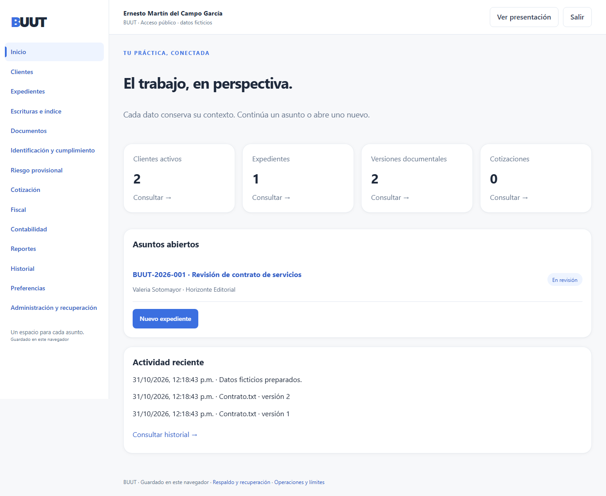
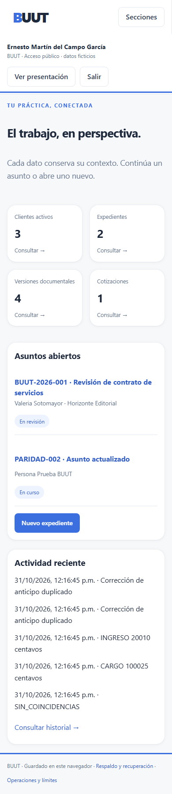

Abrir aplicación · Guion de presentación
Acceso público con datos ficticios. El guardado pertenece al navegador: no hay información compartida ni sincronización entre dispositivos. El acceso de Ernesto no protege información privada. Descarga un respaldo antes de borrar los datos del sitio.
Archivos de hasta 20 MiB; el espacio total depende del navegador. El respaldo JSON, de hasta 100 MiB, es propio de esta edición y conserva los documentos. Una copia recuperada no modifica el origen.
Cuentas privadas, permisos por registro, auditoría atribuible, asignación del legado, cotejo automático de listas, autorizaciones contables y recuperación SQLite/TAR necesitan el servicio Rust autenticado. Los controles de esta página no sustituyen esas funciones.
El riesgo y los parámetros fiscales conservan su carácter provisional y sus aprobaciones pendientes. OCR y asistencia jurídica automática continúan como etapas independientes.
Capturas de navegador. La comprobación física del S24 FE se registra por separado.

